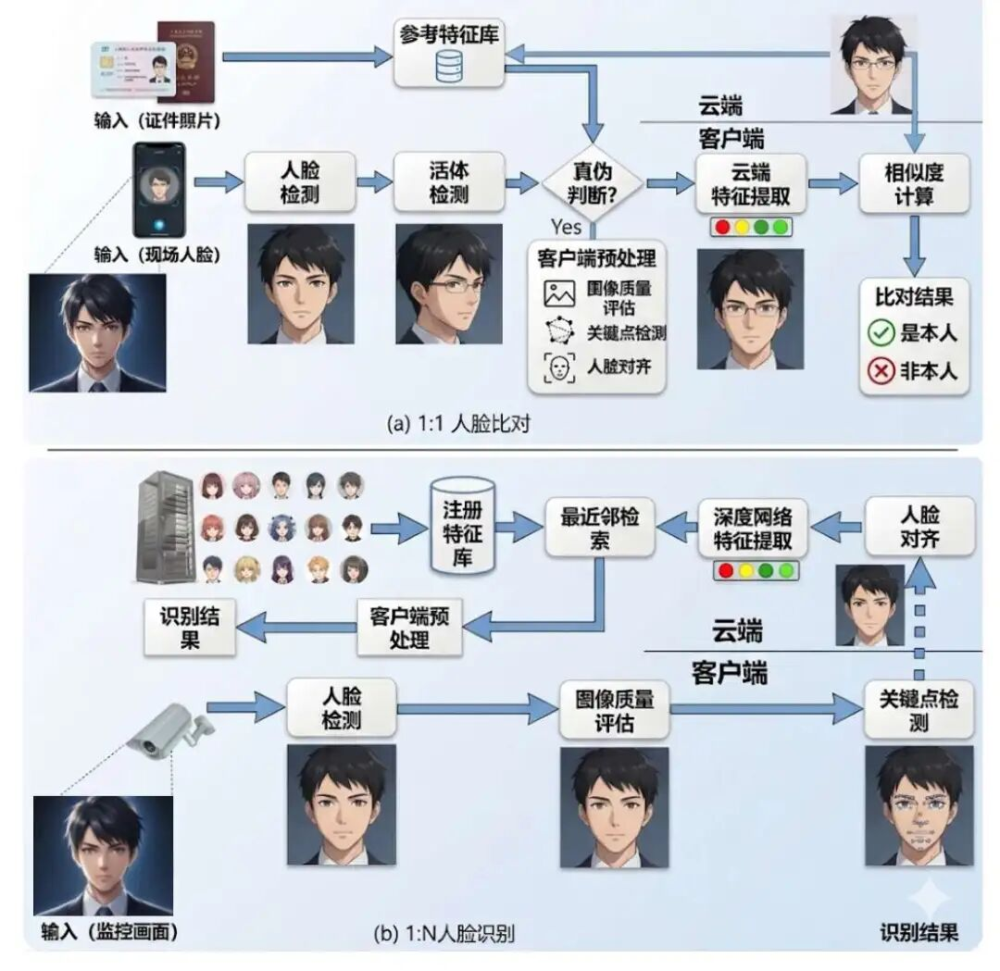
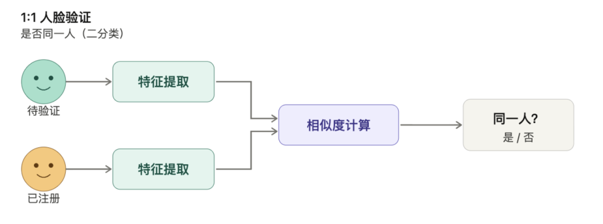
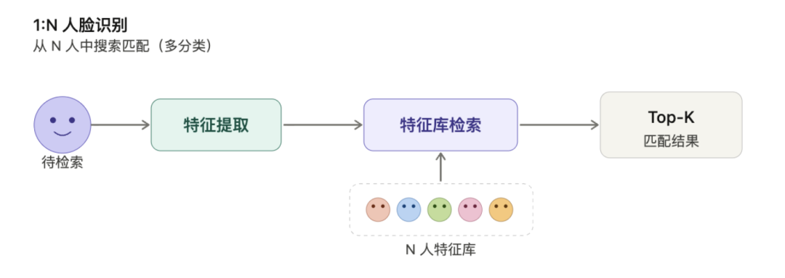
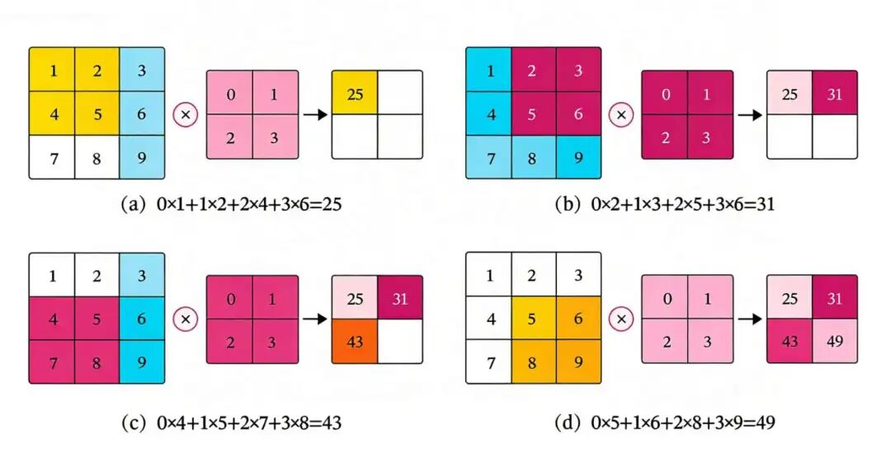

卷积神经网络CNN
“程序员三大美德：懒惰、急躁与傲慢。”——Perl语言之父Larry Wall
AlexNet 的出现，它让世界看到了深度学习的曙光，是计算机视觉技术浪潮的兴起的开端，它整合了的多项关键技术，形成了深度学习的基础工具，同时它从工程实践上验证了GPU加速的可行性，开启英伟达迈入亿万市值的征程。
最关键的，它跳过了传统机器学习特征工程的步骤，迫使从特征工程转向数据驱动。AlexNet 之后，CNN经历了以下一系列的高速发展：
（1）2014年，VGGNet通过重复堆叠小卷积核，构建更深的网络，验证了"越深的网络，提取特征的能力越强"这一核心思路，为后续模型设计奠定了基础。
（2）同年谷歌提出GoogLeNet，其中Inception模块通过多尺度卷积并行提取特征（1×1、3×3、5×5卷积核组合），并引入1×1卷积降维，在保持性能的同时显著减少参数量。
（2）2015年，何恺明团队推出ResNet，发明了"残差连接"技术——允许信息跨层直接传递，解决了深层网络难以训练的问题，首次实现152层网络训练，识别错误率降至3.6%，甚至超越人类水平。
（3）2020年，Vision Transformer打破纯CNN范式，将Transformer的注意力机制引入视觉任务，在大数据场景下超越传统CNN，开启了CNN与Transformer融合的新时代。
这些年间还涌现了GoogLeNet（多尺度特征提取）、YOLO（实时目标检测）、MobileNet（移动端轻量化）、DenseNet（密集连接）等重要模型。
接下来我们就开始来学习这个开启了深度学习繁荣时代的经典模型：卷积神经网络。
生活中的人脸识别
相信人脸识别的这个场景大家再熟悉不过了，几乎每天都用，人脸解锁手机、刷脸开门、刷脸支付，人脸识别背后所使用的技术就是卷积神经网络。
人脸识别的任务定义
首先我们要明确，什么是人脸识别？人脸识别主要分为这么几类任务：

1） 1:1人脸验证（Face Verification） 第一种是一比一人脸比对，确认待检测人脸与指定模板是否属于同一人，本质是二分类问题。例如手机解锁、支付验证等场景，一般的工作流程是这样的：
① 用户预先注册人脸图像，如身份证照片；② 输入待验证人脸图像；③ 计算两幅图像的特征相似度，常用余弦相似度或欧氏距离；④ 相似度超过阈值则验证通过。

2）1:N人脸识别（Face Identification） 第二种任务是一对多的场景，从数据库中搜索是否存在高度相似的待检测人脸的图像信息，属于多分类问题。例如安防监控、嫌疑人追踪等场景，一般的工作流程是这样的：
① 构建包含N个身份的人脸特征库；② 输入待检索人脸图像；③ 提取特征并与库中所有特征比对； ④ 输出相似度最高的Top-K结果。

这种场景的关键挑战是随着数据库规模增大，误识率会显著上升——数据库越大，长得相似的人越多，被认错的概率也就越高。
3） N:N人脸聚类（Face Clustering） 第三种任务是人脸聚类，在无标签数据中自动分组相似人脸，比如你手机里面的相册分类，或者是社交平台打标签的场景。
这类任务的技术难点在于需平衡类内距离，同一人不同姿态与类间距离不同人相似长相，比如DBSCAN算法需动态调整邻域范围。
卷积神经网络的结构
搞清楚了什么是人脸识别任务，接下来我们来讲讲卷积神经网络在整个过程中发挥了什么作用，首先我们介绍一下卷积神经网络的大致结构：它由卷积层、池化层、全连接层构成。
其中输入层统一数据格式，为后续处理奠定基础；卷积层负责逐级提取从边缘到语义的层次化特征；激活层负责打破线性局限，释放模型拟合能力；而池化层则用于提升计算效率与空间鲁棒性；最后一层是全连接层：整合全局信息，输出目标任务结果。

1、输入层：数据的标准化入口
首先我们来看看输入层在人脸识别过程中所发挥的作用：它负责接收原始图像数据，并进行预处理。
例如输入一张尺寸固定为112×112像素的人脸图片，确保不同分辨率人脸对齐。 首先要进行归一化，将像素值从[0,255]缩放到[-1,1]或[0,1]，加速训练收敛。 其次是确保多通道支持，将RGB三通道分别处理，保留颜色信息如肤色和光照等。 然后还会进行数据增强，在训练时随机翻转、旋转输入图像，提升模型泛化性。
2、卷积层：特征提取的核心引擎
卷积层是最核心的层，首先我们要知道什么是“卷积”。卷积（Convolution）是一种数学运算，它让两个函数通过"翻转→滑动→逐点相乘→求和"的过程生成第三个函数。拆开来看这个名字：
"卷"指翻转。 在数学上的标准卷积中，计算前要先把卷积核翻转（比如把 [1, 2, 3] 变成 [3, 2, 1]）。你可以想象把一张写着数字的纸条翻面——左右顺序颠倒了，这就是"卷"的含义。
"积"指乘积累加。 翻转后的卷积核在信号上逐步滑动，每到一个位置，就把覆盖区域内的数值逐个相乘再求和，这个"乘了再加"的操作就是"积"。
在图像处理中，卷积可理解为“滑动加权平均”：用一个小矩阵，类似小窗口在图像上滑动，对局部区域进行加权求和，提取边缘、纹理等特征。
滑动窗口过程中，每个位置的像素值与卷积核的权重相乘并求和，体现“乘积累积”的数学本质，因此得名“积”。
想象一个小窗口在照片上一格一格地滑动，每到一个位置，就把窗口覆盖的那一小块图像和一组固定的权重做加权求和，得出一个数字。这个小窗口就叫"卷积核"，滑动一圈之后得到的一整张新图就叫"特征图"——它突出了原图中的某种模式，比如一条边缘线或一块特定纹理。
在人脸识别过程中通过卷积核滑动扫描，提取局部特征（边缘、纹理、形状等）。比如低级卷积层可以检测发际线、下巴轮廓等边缘、和皮肤颗粒等基础纹理。而高级卷积层则通过组合低级特征，识别眼睛的圆形、鼻子的三角形的五官结构。
3. 激活层：引入非线性表达能力
第三层是激活层，它的作用是对卷积层输出的特征图进行“非线性变换”，保留有用特征、抑制冗余信息，让网络能拟合复杂的图像规律。
如果没有激活层，多层CNN等价于单层线性模型，无法捕捉图像的边缘、纹理、物体轮廓等复杂特征。
比如我们之前介绍过的ReLU函数，在人脸识别任务中负责过滤负响应，如暗区噪声，保留高亮边缘等有效特征。
不同的激活函数在CNN中的表现各异，ReLU函数的优点是计算高效，可以缓解梯度消失，因为它的正区间梯度恒为1，但这也是其缺点，若输入长期为负，该神经元会永久“失效”，这称之为“死亡ReLU问题”。
因此后续发展出了Leaky ReLU、GELU等ReLU的变种，专为解决训练不稳定，模型泛化性差的问题。
4. 池化层：降维与空间不变性
第四层是池化层，首先我们要理解什么是池化？池化这个词不是那么好理解，无法顾名思义，实在要顾名思义，就是“池子里弱水三千，只取一瓢饮”，即只保留“滑动窗口”内所有数值中的最大值或者平均值。
借用一个比喻，就像把一张高清照片缩小，只保留每个小区域的“关键信息”，比如最亮的像素或者是平均亮度，去掉冗余细节，既压缩了数据量，又保留了核心特征（如物体轮廓、边缘）。
所以池化的作用是压缩特征图尺寸，保留关键特征，增强对平移、旋转的鲁棒性。
在人脸识别任务中池化可以抗位置偏移，即使人脸在图像中轻微移动，最大池化仍能保留最强响应，比如眼睛位置变化不影响识别。
其次池化也属于一种降维操作，比如将7×7×5特征图池化为3×3×5，计算量将减少75%。
5. 全连接层：特征整合与决策输出
第五层是常见的全连接层，其作用是整合提取到的特征并进行分类决策。
卷积层和池化层的主要工作是自动提取图像的局部和层次化特征，例如边缘、纹理、形状等。然而，这些特征对于最终的分类任务（如判断图片中是猫还是狗）来说是零散的。
全连接层则负责将这些分散的特征组合起来，形成一个全局的、综合的特征表示，并得到最终的分类结果。
首先进行特征整合，将最后一个卷积层或池化层输出的二维特征图展平为一个一维特征向量，并将所有局部特征通过加权连接进行组合，学习它们之间的复杂非线性关系。
然后进行分类决策，将整合后的高级特征通过一个或多个全连接层，最终输出一个维度与分类类别数相同的向量。这个输出向量通常会输入到Softmax函数中，转化为每个类别的概率，从而完成分类任务。
卷积神经网络的卷积过程
卷积神经网络中最为神秘的部分就是卷积的过程，它怎么就通过这个过程记住了你的人脸呢？换句话说，人脸的特征是怎么提取到的？
1、卷积的过程
卷积神经网络（CNN）的卷积过程是其核心操作，本质是通过滑动窗口对输入数据进行局部特征提取。具体步骤如下：

1）卷积核滑动：卷积核（如3×3或5×5的小矩阵）在输入图像上按指定步长（Stride）滑动，覆盖局部区域（如3×3像素块）。
2）填充（Padding）：为保留边缘信息，常在图像外围补零，确保输出尺寸不变
3）多核与多通道处理：
- 多核：使用多个卷积核（如32个3×3核），每个核提取不同特征（如边缘、纹理）。
- 多通道：RGB图像分3通道处理，各通道卷积结果相加生成单通道特征图。
4）生成特征图：卷积结果形成新的特征图，突出局部响应（如人脸轮廓的垂直边缘）。
我们先不直接探究人脸的识别过程，我们现在先理解一个最简单易懂的场景，比如一张白纸中央有一条垂直的黑线，卷积神经网络是怎么识别这跟垂直的白线呢？
训练的目的是为了得到卷积核，卷积核也是由权重组成的，不同的卷积核有不同的作用，所以存在各种各样的卷积核，识别三角形的卷积核、识别黑色垂直线的卷积核、识别正方形的卷积核。
2、检测垂直直线
接下来我们以训练一个识别垂直直线的卷积核为例，看看为什么卷积神经网络能够识别图像： 1）输入图像定义 假设有一张3×3像素的纯白背景图，中央有一条垂直黑线：
像素值矩阵（0=黑，255=白）：
[[255, 0, 255],
[255, 0, 255],
[255, 0, 255]]图像可视化：
⬜️ ⬛️ ⬜️
⬜️ ⬛️ ⬜️
⬜️ ⬛️ ⬜️2）设计垂直边缘卷积核 使用3×3卷积核，专门检测垂直边缘：
核权重矩阵：
[[ 1, 0, -1],
[ 1, 0, -1],
[ 1, 0, -1]]- 左侧列权重为+1，右侧列权重为-1。
- 当左右像素差异大时（如白→黑→白），计算结果绝对值最大。
3）卷积计算（步长=1，无填充） 滑动窗口计算每个位置的结果：位置(0,0)（左上角） 覆盖区域：
[255, 0, 255]
[255, 0, 255]
[255, 0, 255] → 仅左上3×3部分（实际此处超出图像边界，但因无填充，故不计算）实际有效起始位置为(1,1)，即中心点，但为展示完整过程，此处演示边界补零计算（假设有填充）： 覆盖所有区域：
[255, 0, 255]
[255, 0, 255]
[255, 0, 255]逐元素相乘后求和：
(255×1) + (0×0) + (255×-1) +(255×1) + (0×0) + (255×-1) +(255×1) + (0×0) + (255×-1) = 255 - 255 + 255 - 255 + 255 - 255 = 0由于图像是3×3，卷积核3×3，无填充时输出为1×1的特征图，仅中心一个位置，最终计算结果：
特征图 = [[0]]但显然这与目标不符，因此需调整参数或填充，这就是卷积核训练的核心，利用反向传播调整和更新参数，实际上还是深度学习的训练思想。
4）调整参数：使用更合理的核 改用检测中央垂直线条的核：
核权重矩阵：
[[-1, 2, -1],
[-1, 2, -1],
[-1, 2, -1]]计算中心点(1,1)：
(255×-1) + (0×2) + (255×-1) +
(255×-1) + (0×2) + (255×-1) +
(255×-1) + (0×2) + (255×-1)
= (-255 -255) + (-255 -255) + (-255 -255)
= -1530应用ReLU激活函数：
max(0, -1530) = 0仍不成功，说明核设计需优化。
5）翻转权重符号，找到正确的核 上一步的核给中央黑线（像素值为0）赋予了正权重+2，给两侧白色（像素值为255）赋予了负权重-1，导致结果为负。修正思路很简单：把符号反过来——给两侧白色赋正权重，给中央黑线赋负权重：
核权重矩阵：
[[1, -2, 1],
[1, -2, 1],
[1, -2, 1]]计算中心点(1,1)：
左侧白区：255×1×3 = 765
中央黑线：0×-2×3 = 0
右侧白区：255×1×3 = 765
总和 = 765 + 0 + 765 = 1530
应用ReLU：1530 → 高亮显示输出特征图：
[[1530]] → 强烈响应，明确检测到垂直线通过这种设计，CNN像一把垂直尺子，只在符合条件的位置“亮灯”，实现精准特征提取。
3、从检测一条线到识别一张脸
检测一条垂直线只需要一个卷积核、一层卷积就够了。但人脸是极其复杂的图案——有线条、有弧度、有纹理、有明暗变化。卷积神经网络是怎么做到的？
秘密在于"数量×深度"的组合： 在数量上，CNN不是只用一个卷积核，而是同时使用成百上千个不同的卷积核。有的专门检测垂直线，有的专门检测水平线，有的检测45度斜线，有的检测圆弧……每个核各司其职，从同一张图像中提取不同的模式。
在深度上，CNN把多个卷积层堆叠起来。第一层的输出（简单的线条和边缘）作为第二层的输入，第二层把这些线条组合成更复杂的形状（比如把几条弧线组合成一个眼睛的轮廓），第三层再把这些形状组合成更高级的结构……层层叠加，从简单到复杂。
这就像画一幅肖像画：先画线条（第一层），再拼出五官（中间层），最后看整体比例确认是谁（最后几层）。接下来我们就用人脸识别的例子，看看每一层具体在做什么。
4、深度网络结构
CNN通过层级抽象机制逐步提取从局部到全局的特征，类似人类视觉的认知过程：
CNN通过层级抽象机制逐步提取从局部到全局的特征，类似人类视觉的认知过程： 浅层卷积层先是注意到整体轮廓，即边缘或者是纹理，比如水平/垂直边缘检测核捕捉发际线、下巴线条。
中层卷积层再注意到器官轮廓，五官卷积核再提取五官形状，如眼睛的圆形、鼻子的三角形。
深层卷积层综合识别整个人脸，最终负责整合五官位置和空间关系，如两眼间距、鼻尖位置，形成全局身份特征向量。
这个层级过程与神经科学中视觉皮层的工作方式有异曲同工之处：初级视觉皮层V1处理边缘，高级区域处理整体形状和物体识别。
第一步：低层边缘检测——勾勒人脸基础轮廓
打个比喻：就像画家先用铅笔快速勾勒人脸草稿，CNN的第一层用“细线条刷子”（小尺寸卷积核）扫描整幅图像，捕捉人脸最基础的边缘、色块和明暗对比，搭建人脸的“骨架框架”。具体过程：
（1）输入图像：一张包含完整人脸的彩色/灰度图，清晰呈现发际线、眼眶、鼻梁、嘴唇、下颌线等基础结构。
（2）边缘检测卷积核：使用两组3×3卷积核，分别检测水平和垂直边缘，全面覆盖人脸轮廓线条：
- 垂直边缘核（检测鼻梁、眼眶左右边缘、下颌线垂直段）：
[ -1, 0, 1 ]
[ -2, 0, 2 ]
[ -1, 0, 1 ] - 水平边缘核（检测发际线、眉骨、嘴唇上下边缘、下颌线水平段）：
[ -1, -2, -1 ]
[ 0, 0, 0 ]
[ 1, 2, 1 ] （3）输出特征图：人脸的发际线、眼眶轮廓、鼻梁两侧、嘴唇边缘、下颌线等位置出现高亮线条，非人脸区域（如背景）无明显响应，初步分离人脸与背景，形成“线稿式”特征图。
第二步：中层局部特征组合——拼接五官关键结构
比喻：画家用基础线条拼出五官的具体形状，CNN的中层用“组合型刷子”（更大尺寸卷积核+多尺度融合），将底层边缘连接成人脸特有的局部特征（眼睛、鼻子、嘴巴、眉毛），形成“五官组件”。具体过程：
（1）输入特征图：底层已提取的人脸边缘线稿，包含眼眶、鼻梁、嘴唇等基础线条。
（2）五官检测卷积核：设计3组5×5专用卷积核，分别匹配五官的典型形状：
- 眼睛检测核（匹配“椭圆轮廓+瞳孔暗区”，上下边缘权重高、中心权重低）：
[ 0, 1, 1, 1, 0 ]
[ 1, 0, 0, 0, 1 ]
[ 1, 0, -2, 0, 1 ]
[ 1, 0, 0, 0, 1 ]
[ 0, 1, 1, 1, 0 ] - 鼻子检测核（匹配“三角形鼻尖+垂直鼻梁”，三个角点+中间竖线权重高）：
[ 0, 0, 1, 0, 0 ]
[ 0, 0, 1, 0, 0 ]
[ 1, 1, -2, 1, 1 ]
[ 0, 0, 1, 0, 0 ]
[ 0, 0, 1, 0, 0 ] - 嘴唇检测核（匹配“弧线轮廓”，上下弧线权重高、中间区域权重低）：
[ 0, 0, 0, 0, 0 ]
[ 1, 1, 0, 1, 1 ]
[ 1, 0, -1, 0, 1 ]
[ 1, 1, 0, 1, 1 ]
[ 0, 0, 0, 0, 0 ] （3）输出特征图：眼睛、鼻子、嘴巴、眉毛的位置分别出现高亮响应区，形成清晰的“五官定位图”——比如双眼区域呈现椭圆形高亮，鼻子区域呈现三角形高亮，嘴唇区域呈现弧线形高亮，同时保留五官之间的相对位置关系（如两眼在同一水平线、鼻尖在两眼中间下方）。
第三步：高层全局特征匹配——确认人脸身份
打个比喻：画家审视整幅画的五官比例、脸型特征，判断人物身份，CNN的高层用“智能全景放大镜”（全连接层+全局特征融合），将中层的五官特征与脸型、五官间距等全局信息结合，与数据库中的人脸模板精准匹配，最终输出身份结果。具体过程：
（1）输入特征图：中层已定位的五官高亮区域+人脸轮廓特征，包含“眼睛位置、鼻子形状、嘴唇厚度、脸型轮廓、两眼间距、鼻唇距离”等关键信息。
（2）全连接层+全局特征融合作用：
- （特征展平与融合）：将中层特征图展平为一维向量，向量元素包含“每个五官的位置坐标、形状大小、轮廓曲率”等量化信息（如两眼间距对应5个像素单位、鼻尖到嘴唇距离对应3个像素单位、脸型为椭圆形）；
- （模板对比）：将融合后的全局特征向量，与数据库中已存储的多个人脸模板（如“张三”“李四”的人脸特征向量）进行逐一比对，计算相似度（如欧氏距离、余弦相似度）；
- （身份判断）：若某个人脸模板的相似度超过设定阈值（如95%），则输出该身份的高概率（如“张三，匹配概率98%”）；若所有模板相似度均低于阈值，则输出“未匹配到已知身份”。
（3）输出结果：明确的身份标签+匹配概率，完成人脸识别（如屏幕显示“识别成功：张三，置信度0.98”）。
设计完人脸识别的神经网络结构之后，要怎么让这个模型结构学习呢？
你可能会有一个疑问：上面那些卷积核（检测垂直线的、检测眼睛的、检测鼻子的）都是人为设计的，难道工程师要给每种特征都手工设计一个卷积核吗？
答案是：不需要。卷积核的权重是训练出来的，不是人手工设计的。
这就是深度学习最强大的地方——你只需要给模型足够多的数据和正确的答案（标签），模型会自己学会该用什么样的卷积核。上面那些手工设计的例子只是为了帮助你理解卷积核"在做什么"，实际训练中，模型通过我们之前章节介绍过的"前向传播→计算损失→反向传播→更新权重"这套流程，自动调整每个卷积核中的权重数字。
回忆之前我们在讲解深度学习核心思想章节所提到的，深度学习的本质是通过前向传播、反向传播、梯度计算等手段不断的优化损失从而更新神经网络结构中的权重参数。
具体到人脸识别的场景，人脸神经网络的训练目的就是通过更新卷积核中的权重参数，从而达到识别人脸的目的。
卷积核参数如何自动学习有效特征？
卷积核的权重不是人为预设后一成不变的的，而是通过数据驱动和反向传播优化自动学习得到的。整个过程就像一个“试错-反馈-修正”的循环，以下是具体原理和实现步骤：
1、随机初始化：权重参数赋值
初始状态：所有卷积核的权重在训练前被随机初始化（如从高斯分布采样），类似给机器一堆杂乱无章的“滤镜”。
初始化需满足一定数学约束（如He初始化），避免梯度爆炸或消失。随机性确保不同卷积核探索不同特征方向。假设初始卷积核权重为：
[0.1, -0.3, 0.2]
[0.4, 0.0, -0.1]
[-0.2, 0.5, 0.3]此时它可能无法检测任何有效特征，但通过训练会逐渐优化。
2、 前向传播：生成初步预测
输入数据：将带标签的人脸图像输入网络（如一张“张三”的照片）。 特征提取：卷积核在图像上滑动，生成特征图（即使初始结果毫无意义）。 最终输出：通过全连接层和Softmax得到预测标签（如“张三”概率20%，“李四”概率80%）。
3、 损失计算：量化错误程度
损失函数：计算预测结果与真实标签的差异。 分类任务常用交叉熵损失：
$$ L = -\sum y_i \log(p_i) $$其中 $y_i$ 是真实标签（“张三”为1），$p_i$ 是预测概率。 若“张三”真实概率为100%，但网络预测为20%，则损失值为 $-\log(0.2) \approx 1.61$。
4. 反向传播：逆向传递误差信号
链式求导：从损失函数开始，通过微积分链式法则逐层计算每个卷积核权重的梯度（即权重对损失的影响程度）。 梯度公式：对某个卷积核权重 $w_{ij}$，梯度为：
$$ \frac{\partial L}{\partial w_{ij}} = \sum_{x,y} \frac{\partial L}{\partial f_{x,y}} \cdot I_{x+i,y+j} $$其中 $f_{x,y}$ 是特征图在位置 $(x,y)$ 的值，$I$ 是输入图像。
直观理解： 梯度告诉网络：“如果增大这个权重，损失会减少多少？” 例如，若某个卷积核在“张三”的鼻子区域产生高梯度，说明该核对识别“张三”很关键。
5. 参数更新：向正确方向迈步
优化器（如Adam）：根据梯度动态调整学习率，更新卷积核权重，更新公式：
$$ w_{new} = w_{old} - \eta \cdot \frac{\partial L}{\partial w} $$其中 $\eta$ 是学习率（如0.001）。
什么是优化器？
可以理解为帮模型顺着梯度改权重、最小化误差的工具，将这一系列操作打包成一个工具。
假设某卷积核权重初始为0.1，梯度计算为-0.5，学习率0.001，则更新后： $w_{new} = 0.1 - 0.001 \times (-0.5) = 0.1005$
效果：该权重略微增大，未来对相似特征的响应会更强。
6. 循环迭代：从混沌到秩序
批量训练：最后是对大量数据重复上述过程（如100万张人脸图像）。 特征演化：我们对训练过程做一个简单的总结：
| 训练阶段 | 卷积核行为 | 示例（人脸识别场景） |
|---|---|---|
| 初期 | 随机响应 | 胡乱检测噪点或色块 |
| 中期 | 学习边缘 | 检测鼻梁垂直线、眼角弧线 |
| 后期 | 组合形状 | 激活眼睛圆形、鼻子三角形 |
最后来总结一下，CNN的设计思想可以归结为两个关键词：局部性和层次性。
局部性体现在卷积操作上——不像全连接网络那样让每个像素都与所有神经元相连，卷积核只关注局部区域，这既大幅降低了参数量，也符合图像本身"相邻像素关联更强"的统计特性。
层次性则体现在深度网络的逐层抽象上——浅层提取边缘和纹理，中层组合出五官等局部结构，深层整合空间关系形成全局语义表示，每一层的输出都是下一层的输入，特征的抽象程度随深度递增。
另一个值得强调的点是：卷积核的权重不是先验知识，而是从数据中学来的。我们在文中手工设计的垂直线检测核，只是为了帮助理解卷积"在做什么"。
实际训练中，模型通过反向传播自动收敛到有效的特征提取器——而且往往学到的特征比人类手工设计的更丰富、更具判别力。这正是深度学习相比传统特征工程的根本优势：从"人定义规则"转向"数据驱动规则"。
当然，CNN也并非没有局限。它的感受野受限于卷积核大小和网络深度，对长距离依赖的建模能力天然不足；
池化操作虽然带来了平移不变性，但也丢失了精确的空间位置信息。这些局限，恰好为后来NLP的入场埋下了伏笔——下一系列我们就开始进入到NLP的世界。
学习时刻
卷积（Convolution）：一种"滑动加权求和"操作。用一个小矩阵（卷积核）在输入数据上逐步滑动，每个位置将覆盖区域的数值与核权重逐元素相乘再求和，输出一个数。数学上标准卷积需先翻转核再滑动，但 CNN 中实际做的是互相关（Cross-correlation），省略了翻转步骤——因为权重是训练学来的，翻不翻转不影响结果。
卷积核（Kernel / Filter）：卷积操作中那个滑动的小矩阵，比如 3×3 或 5×5。不同的卷积核提取不同的特征——有的检测垂直边缘，有的检测水平边缘，有的检测弧线。核中的权重不是手工设计的，而是通过反向传播从数据中自动学习得到。
特征图（Feature Map）：卷积核滑过整张输入图像后，所有位置的输出数值排列而成的一张新图。它突出了原图中某种特定模式（如边缘、纹理），相当于对原图做了一次"特征过滤"。一层中使用多个卷积核，就会生成多张特征图，每张捕捉不同类型的特征。
步长与填充（Stride & Padding）：步长是卷积核每次滑动的像素距离，步长越大输出越小；填充是在输入图像边缘补零，用来控制输出尺寸，保留边缘信息。
激活函数（Activation Function）：作用于卷积输出的非线性变换。最常用的是 ReLU，它把所有负值归零、正值不变。没有激活函数，无论网络堆多少层，本质上都等价于一个线性模型，无法拟合图像中的复杂模式。
池化（Pooling）：对特征图进行降采样的操作，在一个小窗口内只保留最大值（最大池化）或平均值（平均池化）。作用有二：一是压缩数据量、降低计算开销；二是增强空间不变性——目标在图像中略微移动时，池化后的特征仍然稳定。
全连接层（Fully Connected Layer）：将前面卷积层和池化层提取的二维特征图展平为一维向量，通过矩阵乘法将所有局部特征加权组合，学习全局的特征关系。最后一层通常接 Softmax 函数，将输出转化为各类别的概率分布，完成分类决策。
层级抽象（Hierarchical Abstraction）：CNN 的核心设计思想。浅层提取低级特征（边缘、纹理），中层组合出中级结构（五官形状），深层整合全局语义（身份特征）。每一层的输出是下一层的输入，特征的抽象程度随深度递增，这与人类视觉皮层（V1→V2→IT）的信息处理方式高度类似。